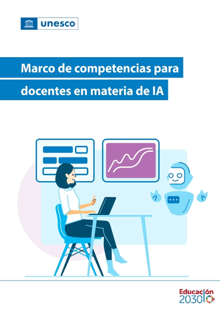

Não é mais um marco de TIC — é o primeiro marco da UNESCO para a sociedade mediada por Inteligência Artificial. Cinco dimensões, com palavras-chave novas: ética e mentalidade centrada no ser humano. Antes a tecnologia parecia só oportunidade; agora exige cuidado.